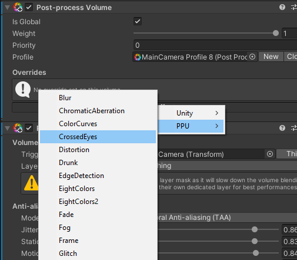

Installation
- Import Post Processing Stack v2 using Package Manager (very important!): Window -> Package Manager -> All -> Post Processing -> Install
- Download and import Simple Post Processing: Asset Store -> Import
- If Post Processing Stack is configured properly, You should be able to add processing effect to Post Processing Volume
Congratulations!